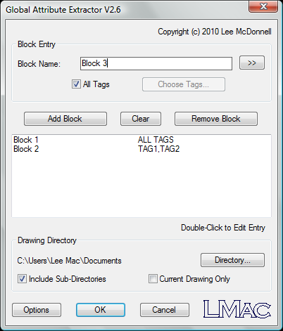
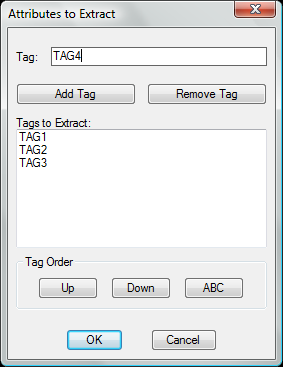
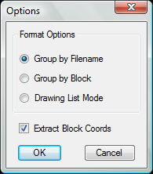
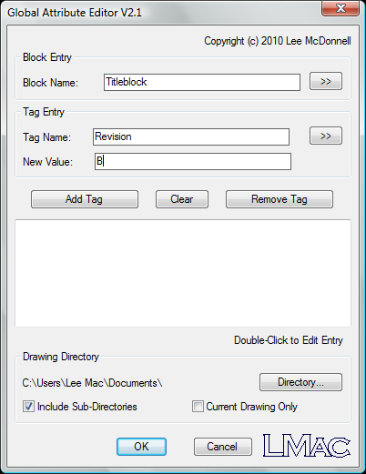

Global Attribute Extractor & Editor
This page is delivered for consistency purposes only, as part of the LeeMac sample module of DynALisp, which shows how DynALisp turns existing AutoLISP programs into a module. The program and its description are the work of Lee Mac, who keeps all the credit for them. The original page, with the latest version, is on Lee Mac's website: https://lee-mac.com/macatt.html
| Function Syntax | LM-GlobalAttributes – original syntax: MacAtt / MacAttExt / MacAttEdit (see aliases) |
| Current Version | 3.1 |
| Compatible with AutoCAD for Mac? | No |
| Compatible with AutoCAD LT? | No |
| Original Page | lee-mac.com/macatt.html |
Program Description
This program enables the user to both extract multiple block attributes from a directory (and subdirectories) of drawings to Excel, and furthermore edit the values of several attributes in such drawings. The program uses ObjectDBX functionality, meaning hundreds of drawings may be processed in under a minute as no drawing need be opened for the program to extract/modify the relevent information.
Global Attribute Extractor
This program will retrieve specific attribute values from blocks in a user compiled list, from either the current working drawing, or all drawings in a directory, and, if specified, all subdirectories of the selected directory.
The program may be started by typing MacAttExt at the AutoCAD command line, (or alternatively by typing MacAtt and selecting the Extractor option).
The user is presented with the following dialog interface:
Global Attribute Extractor Main Interface

Here, the user may specify the name of, or select, a block containing attributes to be extracted, and subsequently enter the tag strings of attributes whose values are desired to be extracted.
If the user chooses All Tags, every attribute found within the block specified will be extracted; else the user may select the Choose Tags button, and manually enter specific attribute tags to be extracted.
Attributes to Extract Dialog

Using this dialog, the order in which the attributes are written to Excel may also be controlled. Groups of attribute tags may be moved up & down or sorted alphabetically using the controls located near the bottom of the dialog panel
When satisfied with the data entered, the user may click Add Block to add the specified block and attribute preferences to the list.
Entries listed in the centre panel of the dialog may be edited by double-clicking on the relevant entry. This will open the Attributes to Extract dialog, allowing the user to refine the attribute information entered.
A directory of drawings may then be selected to process - the user also has the option to process all subdirectories of the selected directory; or merely the current working drawing.
Extraction Formatting Options
The Global Attribute Extractor offers three different formatting options controlling the layout of the attribute information in Excel.
Options Dialog

Group By Filename
This is the default mode and will list the blocks under the filename of each drawing processed.
| Drawing Filename | |
| Block Name | |
| Tag1 | Tag2 |
| Value1 | Value2 |
Group By Block
This mode will disregard the drawing from which the attribute has been extracted and rather group all attribute values under the block name from which they were extracted.
| Block Name | |
| Tag1 | Tag2 |
| Value1 | Value2 |
Drawing List Mode
This mode is aimed at extracting attributes from titleblocks, in which the user may have many similar blocks with almost identical attribute tags. This mode will not write the names of the blocks from which the attributes are extracted, but will append the drawing filename from which the attributes are found to the end of the values.
| Tag1 | Tag2 | CAD Filename |
| Value1 | Value2 | Filename |
The user may also opt to extract the coordinates of the block from which the attributes are extracted by checking the relevant box in the Options dialog.
When all data in entered and the formatting mode is set, the user may proceed to perform the attribute extraction wherein all drawings found in the selected directory (and subdirectories), or just the current drawing are processed using ObjectDBX. This functionality means that hundreds of drawings may be processed in under a minute as no drawing need be opened to extract the necessary information. The program will subsequently write the attribute information to a new worksheet in Excel.
Global Attribute Editor
The program may be started by typing MacAttEdit at the AutoCAD command line (or, alternatively by typing MacAtt and selecting the Editor Option).
This program utilises a similar interface to the Global Attribute Extractor; the user may enter a block name and proceed to input multiple attribute tags contained within such block whose values are to be edited.
Global Attribute Editor Main Interface

A directory may subsequently be selected and all drawings found in the chosen directory, and, if desired, subdirectories of the selected directory, will be processed.
Bundled program notes
;;----------------=={ Global Attribute Editor & Extractor }==------------------;;
;; ;;
;; Extractor (MacAttExt):- ;;
;; ----------------------------- ;;
;; ;;
;; The function will retrieve specific attributes from blocks that appear in a ;;
;; user compiled list; from all drawings in a specified directory ;;
;; (and SubDirectories). ;;
;; ;;
;; The program will then proceed to write the attribute tags/values to an Excel ;;
;; file. The format in which attribute tags/values are written to the Excel ;;
;; worksheet is dependent on the mode selected in the 'Options' dialog. ;;
;; ;;
;; If the user chooses to group under Filename, then all blocks will be written ;;
;; in alphabetical order under the filename of the drawing from which they were ;;
;; extracted (this is the default mode). If the user chooses to group under ;;
;; Block, then all blocks are grouped together and are written in alphabetical ;;
;; order. ;;
;; ;;
;; Finally, if the user selects Drawing List Mode, then only tags are ;;
;; displayed, and all values are written in a list, with the drawing filename ;;
;; in the last column. This mode is more suited for a single block extraction ;;
;; and may produce undesirable results if extracting multiple blocks with ;;
;; varying tags. ;;
;; ;;
;; The user may also choose to extract block coordinates - with this toggle set ;;
;; the coordinates of the insertion point of the block from which each ;;
;; attribute is extracted is displayed in a column adjacent to the tag listing. ;;
;; ;;
;; The order in which tags are written is controlled by the order in which they ;;
;; appear in the dialog list (or, if 'ALL TAGS' is displayed, the order in ;;
;; which they appear in the block definition). The user may alter this order ;;
;; using the 'Up', 'Down', and 'ABC' controls on the dialog interface. ;;
;; ;;
;; Editor (MacAttEdit):- ;;
;; ----------------------------- ;;
;; ;;
;; The function will update the value of all tags of a block as specified in a ;;
;; user compiled list; from all drawings in a specified directory ;;
;; (and SubDirectories). ;;
;; ;;
;; TO CREATE A DRAWING LIST ;;
;; ------------------------------------- ;;
;; ;;
;; The Extractor mode of this program may be used to create a drawing list, ;;
;; using attributes extracted from titleblocks in the drawings. ;;
;; ;;
;; To do this, specify the name(s) of, or select the titleblock(s) you wish to ;;
;; extract information from; and specify which attribute information you wish ;;
;; to extract. ;;
;; ;;
;; Make sure that the program is set to 'Drawing List Mode' within the ;;
;; 'Options' dialog. In this mode, all tags are grouped together into one list, ;;
;; and the file from which each titleblock has been extracted is written at the ;;
;; end of each row. ;;
;; ;;
;;-------------------------------------------------------------------------------;;
;; ;;
;; FUNCTION SYNTAX: MacAttExt / MacAttEdit / MacAtt ;;
;; ;;
;; Notes:- ;;
;; ----------- ;;
;; As usual the known bug with ObjectDBX arises when it comes to attribute ;;
;; alignment after modification. A sub-function has been included to try to ;;
;; allow for the shift in position, however it is not 100% foolproof, and a ;;
;; slight shift in position may be noticed. The attribute is realigned when the ;;
;; block is moved manually. This only affects the Global Attribute Editor. ;;
;; --------------------------------------------- ;;
;; ;;
;; As expected, when using the Global Attribute Editor, drawing thumbnails are ;;
;; lost upon saving with ObjectDBX. These return when the drawing is saved ;;
;; manually. ;;
;; ;;
;;-------------------------------------------------------------------------------;;
;; ;;
;; Author: Lee Mac, Copyright © 2009 - www.lee-mac.com ;;
;; ;;
;;-------------------------------------------------------------------------------;;
;; ;;
;; Version: ;;
;; ;;
;; 1.0: 11/06/2009 - First Release ;;
;;-------------------------------------------------------------------------------;;
;; 1.1: 12/06/2009 - Added Suggestions. ;;
;; - General Bug Fixes. ;;
;;-------------------------------------------------------------------------------;;
;; 1.2: 24/11/2009 - Code updated. ;;
;;-------------------------------------------------------------------------------;;
;; 1.3: 17/01/2010 - Updated to include ability to process SubDirectories. ;;
;;-------------------------------------------------------------------------------;;
;; 1.4: 18/01/2010 - Updated Excel format to group attribute tags. ;;
;;-------------------------------------------------------------------------------;;
;; 1.5: 20/01/2010 - Added Dialog Interface. ;;
;;-------------------------------------------------------------------------------;;
;; 1.6: 21/01/2010 - Updated code to account for open drawings within folder ;;
;;-------------------------------------------------------------------------------;;
;; 1.7: 24/01/2010 - Added ability to select Tags to extract. ;;
;; - Modified code to correct order of extracted attributes. ;;
;;-------------------------------------------------------------------------------;;
;; 1.8: 29/01/2010 - Updated code for ObjectDBX Document object aquirement. ;;
;;-------------------------------------------------------------------------------;;
;; 1.9: 02/02/2010 - Added option to process current drawing only. ;;
;; - Updated code to process dynamic blocks. ;;
;; - Added Progress Bar. ;;
;;-------------------------------------------------------------------------------;;
;; 2.0: 05/02/2010 - Added config file to save dialog setup. ;;
;;-------------------------------------------------------------------------------;;
;; 2.1: 08/02/2010 - Added Global Attribute Editor. ;;
;;-------------------------------------------------------------------------------;;
;; 2.2: 08/02/2010 - Added compatibility for older versions. ;;
;;-------------------------------------------------------------------------------;;
;; 2.3: 11/02/2010 - Updated code for Get_Unique function with a 40% speed ;;
;; increase. ;;
;; - In Extractor: Block Tags will be displayed when blocks ;;
;; are selected from drawing. ;;
;; - In Editor: Tags and current values will be added to ;;
;; list when block is selected. ;;
;; - In Extractor: Block name can be changed when ;;
;; double-clicking on entry. ;;
;;-------------------------------------------------------------------------------;;
;; 2.4: 14/02/2010 - Updated program selection prompt. ;;
;;-------------------------------------------------------------------------------;;
;; 2.5: 11/03/2010 - Added option to allow user to choose whether to write ;;
;; drawing filenames. [Ideal for creating a DWG List]. ;;
;;-------------------------------------------------------------------------------;;
;; 2.6: 17/03/2010 - Replaced toggle V2.5 addition with Options dialog to ;;
;; choose Excel format. ;;
;; - Sorted data by Block Name in all modes when writing to ;;
;; Excel. ;;
;;-------------------------------------------------------------------------------;;
;; 2.7: 22/03/2010 - Added code to allow user to control the order in which ;;
;; attributes are written to Excel. ;;
;;-------------------------------------------------------------------------------;;
;; 2.8: 06/04/2010 - Added ability to extract Block Coordinates. ;;
;;-------------------------------------------------------------------------------;;
;; 2.9: 21/06/2010 - Fixed Attribute Tag bug. ;;
;;-------------------------------------------------------------------------------;;
;; 3.0: 08/07/2010 - Fixed bug occurring when file contained no relevant ;;
;; attribute data. ;;
;;-------------------------------------------------------------------------------;;
;; 3.1: 25/10/2010 - Added fix for Save Path ;;
;;-------------------------------------------------------------------------------;;
Command Names And Aliases
As in every DynALisp module, each program of this sample module has one main command, named LM-*, and the original command names of Lee Mac's page are kept as its aliases: they run the same command, and can be added, renamed or removed in Dyl-Suite (saved in Resources\Aliases.csv). The rows marked ↳ are child commands of LM-GlobalAttributes: they are run by their alias, or picked from LM-GlobalAttributes when it lists them (their command is named Pst-*).
| Command | Aliases | Name |
|---|---|---|
| LM-GlobalAttributes | MACATT | Global Attribute Editor And Extractor |
| ↳ MACATTEXT | – | Global Attribute Extractor |
| ↳ MACATTEDIT | – | Global Attribute Editor |